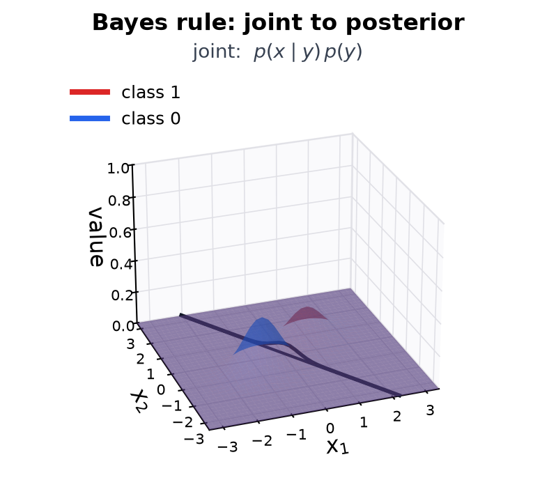
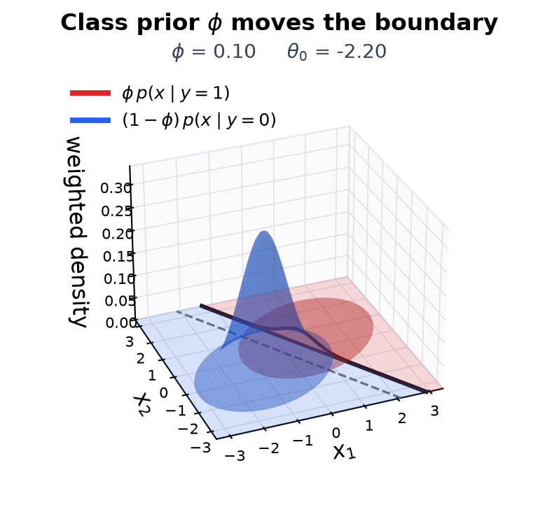
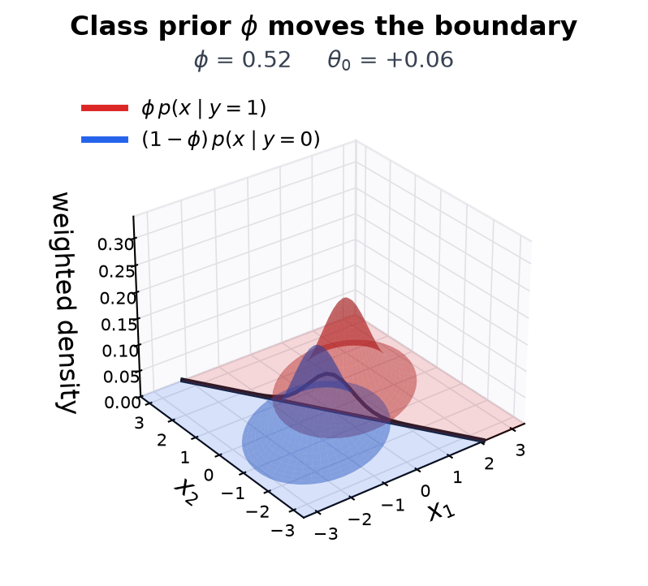
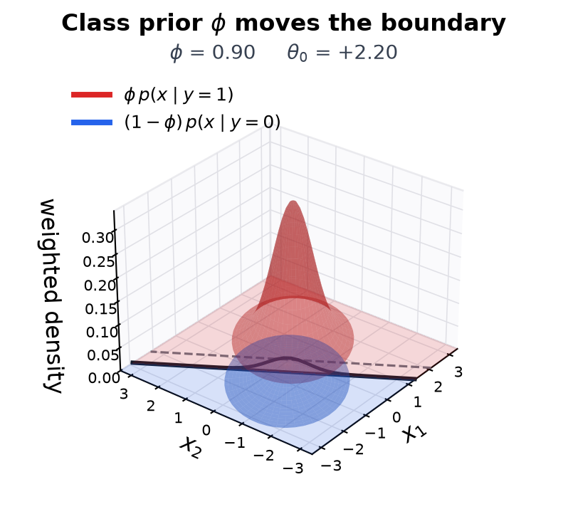
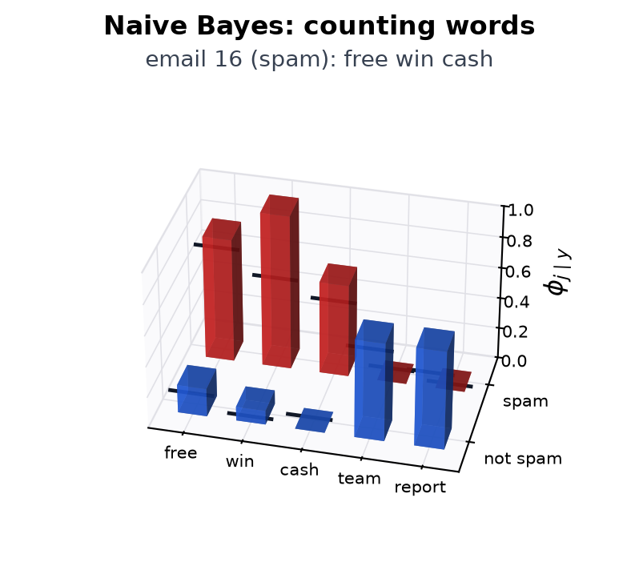
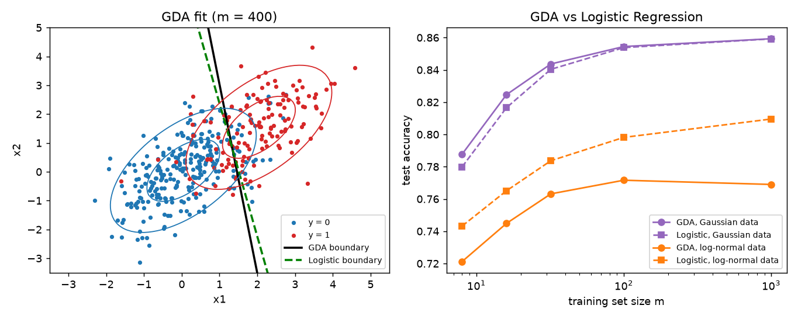

Gaussian Discriminant Analysis और Naive Bayes
Theory
इस lecture में: Discriminative और Generative learning का फ़र्क, Bayes rule से prediction, multivariate Gaussian, Gaussian Discriminant Analysis (GDA) और उसके Maximum Likelihood estimates, GDA की linear decision boundary, GDA बनाम Logistic Regression, और discrete features के लिए Naive Bayes (spam filter का उदाहरण)।
1. एक line में idea
अब तक के algorithms (जैसे Logistic Regression) सीधे यह सीखते थे कि \(x\) दिया हो तो \(y\) क्या होगा। वे दो classes के बीच की सीमा ढूँढते थे। Generative algorithm उल्टी तरफ़ से सोचता है: वह हर class का अलग नक्शा बनाता है कि उस class के examples कैसे दिखते हैं। नया \(x\) आए तो वह पूछता है कि यह किस class के नक्शे से ज़्यादा मेल खाता है।
मान लीजिए हाथी और कुत्ते पहचानने हैं। Discriminative तरीका दोनों को अलग करने वाली रेखा ढूँढता है। Generative तरीका पहले हाथियों को देखकर हाथी का model बनाता है, फिर कुत्तों को देखकर कुत्ते का model, और नए जानवर को दोनों models से मिलाकर देखता है।
इस lecture में दो generative algorithms हैं। GDA तब काम आता है जब features continuous हों और हर class का data Gaussian जैसा हो। Naive Bayes तब, जब features discrete हों, जैसे "email में यह शब्द है या नहीं"।
2. Discriminative बनाम Generative
| क्या सीखता है | उदाहरण | |
|---|---|---|
| Discriminative | सीधे \(p(y \mid x)\), या \(x\) से label तक का map | Logistic Regression, Perceptron |
| Generative | \(p(x \mid y)\) (हर class का model) और \(p(y)\) (class prior) | GDA, Naive Bayes |
Generative model से prediction के लिए Bayes rule लगाते हैं:
\[p(y \mid x) = \frac{p(x \mid y)\, p(y)}{p(x)}, \qquad p(x) = p(x \mid y=1)\,p(y=1) + p(x \mid y=0)\,p(y=0)\]
अगर हमें सिर्फ़ सबसे संभावित class चाहिए, तो denominator \(p(x)\) निकालने की ज़रूरत नहीं। वह \(y\) पर निर्भर नहीं करता, इसलिए दोनों classes के लिए एक ही है और तुलना पर असर नहीं डालता:
\[\arg\max_y\, p(y \mid x) = \arg\max_y\, \frac{p(x \mid y)\, p(y)}{p(x)} = \arg\max_y\, p(x \mid y)\, p(y)\]
3. Multivariate Gaussian
\(n\) dimensions का Gaussian \(\mathcal{N}(\mu, \Sigma)\) दो चीज़ों से तय होता है: mean vector \(\mu \in \mathbb{R}^n\) और covariance matrix \(\Sigma \in \mathbb{R}^{n \times n}\) (symmetric और positive definite)। इसकी density है:
\[p(x; \mu, \Sigma) = \frac{1}{(2\pi)^{n/2}\, |\Sigma|^{1/2}} \exp\left( -\frac{1}{2} (x - \mu)^T \Sigma^{-1} (x - \mu) \right)\]
यहाँ \(|\Sigma|\) का मतलब \(\Sigma\) का determinant है। इस distribution के लिए \(E[X] = \mu\) और \(\mathrm{Cov}(X) = E\left[(X-\mu)(X-\mu)^T\right] = \Sigma\)।
\(\mu\) बदलने से पहाड़ी (density का उभार) सिर्फ़ खिसकती है, आकार नहीं बदलता। आकार \(\Sigma\) तय करता है:
| \(\Sigma\) | contours कैसे दिखते हैं |
|---|---|
| \(I\) (identity) | गोल घेरे |
| \(cI\), \(c\) छोटा या बड़ा | गोल ही, पर छोटा \(c\): पतली और ऊँची पहाड़ी; बड़ा \(c\): चौड़ी और नीची (कुल volume हमेशा 1) |
| Diagonal, entries अलग-अलग | axes की दिशा में खिंचे ellipse |
| Off-diagonal entry positive | ellipse \(x_1 = x_2\) की दिशा में झुका (\(x_1\) बढ़े तो \(x_2\) भी बढ़ता है) |
| Off-diagonal entry negative | ellipse उल्टी दिशा में झुका |
4. GDA Model
Classification problem है, \(y \in \{0, 1\}\) और \(x \in \mathbb{R}^n\)। GDA यह मान लेता है:
\[\begin{aligned} y &\sim \mathrm{Bernoulli}(\phi) \\ x \mid y=0 &\sim \mathcal{N}(\mu_0, \Sigma) \\ x \mid y=1 &\sim \mathcal{N}(\mu_1, \Sigma) \end{aligned}\]
यानी \(p(y) = \phi^y (1-\phi)^{1-y}\), और हर class एक Gaussian है। दोनों classes के mean अलग हैं (\(\mu_0\), \(\mu_1\)), पर covariance \(\Sigma\) एक ही है। Parameters हैं \(\phi, \mu_0, \mu_1, \Sigma\)।
Joint log-likelihood
Logistic Regression में हम conditional likelihood \(\prod_i p(y^{(i)} \mid x^{(i)})\) को maximize करते थे। Generative model में joint likelihood \(\prod_i p(x^{(i)}, y^{(i)})\) को maximize करते हैं:
\[\begin{aligned} \ell(\phi, \mu_0, \mu_1, \Sigma) &= \log \prod_{i=1}^{m} p(x^{(i)}, y^{(i)}; \phi, \mu_0, \mu_1, \Sigma) \\ &= \sum_{i=1}^{m} \log p(x^{(i)} \mid y^{(i)}; \mu_0, \mu_1, \Sigma) + \sum_{i=1}^{m} \log p(y^{(i)}; \phi) \end{aligned}\]
Maximum likelihood estimates
\(\phi\) के लिए: सिर्फ़ दूसरा sum \(\phi\) पर निर्भर है: \(\sum_i \left[ y^{(i)} \log \phi + (1 - y^{(i)}) \log(1-\phi) \right]\)। मान लें \(m_1 = \sum_i 1\{y^{(i)}=1\}\)। Derivative को zero रखें: \(\frac{m_1}{\phi} - \frac{m - m_1}{1-\phi} = 0\), जिससे \(\phi = m_1 / m\)।
\(\mu_1\) के लिए: सिर्फ़ \(y^{(i)}=1\) वाले terms बचते हैं: \(-\frac{1}{2} \sum_{i:\, y^{(i)}=1} (x^{(i)} - \mu_1)^T \Sigma^{-1} (x^{(i)} - \mu_1)\)। इसका gradient \(\Sigma^{-1} \sum_{i:\, y^{(i)}=1} (x^{(i)} - \mu_1)\) है। इसे zero रखने पर \(\mu_1\) class 1 के examples का औसत निकलता है। \(\mu_0\) के लिए भी यही।
\(\Sigma\) के लिए: \(\Sigma\) वाले terms हैं \(-\frac{m}{2} \log|\Sigma| - \frac{1}{2} \sum_i (x^{(i)} - \mu_{y^{(i)}})^T \Sigma^{-1} (x^{(i)} - \mu_{y^{(i)}})\)। \(\Sigma^{-1}\) के सापेक्ष derivative लें (\(\nabla_A \log|A| = A^{-1}\) का इस्तेमाल करके): \(\frac{m}{2}\Sigma - \frac{1}{2} \sum_i (x^{(i)} - \mu_{y^{(i)}})(x^{(i)} - \mu_{y^{(i)}})^T = 0\)।
सब मिलाकर:
\[\begin{aligned} \phi &= \frac{1}{m} \sum_{i=1}^{m} 1\{y^{(i)} = 1\} \\ \mu_0 &= \frac{\sum_{i=1}^{m} 1\{y^{(i)} = 0\}\, x^{(i)}}{\sum_{i=1}^{m} 1\{y^{(i)} = 0\}}, \qquad \mu_1 = \frac{\sum_{i=1}^{m} 1\{y^{(i)} = 1\}\, x^{(i)}}{\sum_{i=1}^{m} 1\{y^{(i)} = 1\}} \\ \Sigma &= \frac{1}{m} \sum_{i=1}^{m} (x^{(i)} - \mu_{y^{(i)}})(x^{(i)} - \mu_{y^{(i)}})^T \end{aligned}\]
Algorithm, step by step
- गिनें कि कितने examples class 1 के हैं। यही अनुपात \(\phi\) है।
- हर class के examples का औसत निकालें: \(\mu_0\) और \(\mu_1\)।
- हर example में से उसकी अपनी class का mean घटाएँ, और इन centred vectors से एक साझा \(\Sigma\) बनाएँ।
- नए \(x\) के लिए \(p(x \mid y=1)\,\phi\) और \(p(x \mid y=0)\,(1-\phi)\) निकालें। जो बड़ा हो, वही class।
कोई iteration नहीं, कोई learning rate नहीं: सब कुछ गिनती और औसत से मिल जाता है।
5. Decision boundary linear क्यों है?
Bayes rule से posterior को इस रूप में लिख सकते हैं:
\[p(y=1 \mid x) = \frac{p(x \mid y=1)\,\phi}{p(x \mid y=1)\,\phi + p(x \mid y=0)\,(1-\phi)} = \frac{1}{1 + \exp(-a(x))}, \qquad a(x) = \log \frac{p(x \mid y=1)\,\phi}{p(x \mid y=0)\,(1-\phi)}\]
दोनों Gaussians का normalizing constant एक ही है (क्योंकि \(\Sigma\) एक ही है), इसलिए वह कट जाता है:
\[a(x) = -\frac{1}{2}(x-\mu_1)^T \Sigma^{-1} (x-\mu_1) + \frac{1}{2}(x-\mu_0)^T \Sigma^{-1} (x-\mu_0) + \log\frac{\phi}{1-\phi}\]
दोनों brackets खोलें। \(-\frac{1}{2} x^T \Sigma^{-1} x\) और \(+\frac{1}{2} x^T \Sigma^{-1} x\) आपस में कट जाते हैं। यही असली बात है: quadratic term गायब हो जाता है और बचता है
\[a(x) = \underbrace{(\mu_1 - \mu_0)^T \Sigma^{-1}}_{\theta^T}\, x + \underbrace{\frac{1}{2}\left( \mu_0^T \Sigma^{-1} \mu_0 - \mu_1^T \Sigma^{-1} \mu_1 \right) + \log\frac{\phi}{1-\phi}}_{\theta_0}\]
इसलिए
\[p(y=1 \mid x) = \frac{1}{1 + \exp\left(-(\theta^T x + \theta_0)\right)}, \qquad \theta = \Sigma^{-1}(\mu_1 - \mu_0)\]
Decision boundary वह जगह है जहाँ \(p(y=1 \mid x) = 0.5\), यानी \(\theta^T x + \theta_0 = 0\)। यह एक सीधी line (या hyperplane) है। ध्यान दें कि prior \(\phi\) सिर्फ़ \(\theta_0\) में आता है: \(\phi\) बढ़ाने से boundary की दिशा नहीं बदलती, वह बस class 0 की तरफ़ खिसक जाती है। अगर दोनों classes के \(\Sigma\) अलग होते, तो quadratic term नहीं कटता और boundary curved होती।
6. GDA बनाम Logistic Regression
ऊपर हमने देखा कि GDA का posterior ठीक Logistic Regression वाले sigmoid रूप में है। पर दोनों algorithms एक ही data पर अलग-अलग \(\theta\) देते हैं, क्योंकि वे अलग चीज़ maximize करते हैं।
- GDA \(\Rightarrow\) logistic posterior, पर उल्टा सच नहीं। अगर \(x \mid y\) Gaussian (साझा \(\Sigma\)) है तो \(p(y \mid x)\) logistic है। पर \(p(y \mid x)\) logistic होने से यह नहीं निकलता कि \(x \mid y\) Gaussian है। जैसे, \(x \mid y=0 \sim \mathrm{Poisson}(\lambda_0)\) और \(x \mid y=1 \sim \mathrm{Poisson}(\lambda_1)\) हो, तब भी posterior logistic ही होता है।
- GDA की assumptions ज़्यादा मज़बूत हैं। जब वे सही (या लगभग सही) हों, तो GDA data का बेहतर इस्तेमाल करता है और कम training examples में अच्छा model दे देता है (asymptotically efficient)।
- Logistic Regression ज़्यादा robust है। वह कम मानकर चलता है, इसलिए data Gaussian न हो तब भी ठीक काम करता है। बड़े training set पर वह अक्सर GDA के बराबर या उससे बेहतर रहता है।
| GDA | Logistic Regression | |
|---|---|---|
| Maximize करता है | joint likelihood \(\prod_i p(x^{(i)}, y^{(i)})\) | conditional likelihood \(\prod_i p(y^{(i)} \mid x^{(i)})\) |
| Assumption | \(x \mid y\) Gaussian, साझा \(\Sigma\) | सिर्फ़ \(p(y \mid x)\) का sigmoid रूप |
| Training | closed form (गिनती और औसत) | iterative (Gradient Ascent, Newton) |
| कम data, assumption सही | बेहतर | थोड़ा पीछे |
| Assumption गलत | बिगड़ सकता है | टिका रहता है |
7. Naive Bayes
अब features discrete हैं। उदाहरण: spam filter। एक vocabulary (शब्दों की सूची) लें जिसमें \(n\) शब्द हैं। हर email को एक binary vector \(x \in \{0,1\}^n\) से दिखाएँ: \(x_j = 1\) अगर vocabulary का \(j\)-वाँ शब्द email में है, वरना \(x_j = 0\)। \(y = 1\) का मतलब spam है।
अगर \(n = 50000\) हो तो \(x\) के \(2^{50000}\) संभव values हैं। \(p(x \mid y)\) को सीधे model करना असंभव है। इसलिए एक बहुत मज़बूत assumption लेते हैं।
Naive Bayes assumption: \(y\) दिया हो, तो सारे \(x_j\) आपस में conditionally independent हैं। यानी अगर पता है कि email spam है, तो उसमें "buy" होने की जानकारी से "price" होने की probability नहीं बदलती। Chain rule और इस assumption से:
\[\begin{aligned} p(x_1, \dots, x_n \mid y) &= p(x_1 \mid y)\, p(x_2 \mid y, x_1) \cdots p(x_n \mid y, x_1, \dots, x_{n-1}) \\ &= p(x_1 \mid y)\, p(x_2 \mid y) \cdots p(x_n \mid y) = \prod_{j=1}^{n} p(x_j \mid y) \end{aligned}\]
Parameters: \(\phi_{j \mid y=1} = p(x_j = 1 \mid y = 1)\), \(\phi_{j \mid y=0} = p(x_j = 1 \mid y = 0)\) और \(\phi_y = p(y = 1)\)। कुल \(2n + 1\) parameters, \(2^n\) की जगह।
Joint likelihood \(\mathcal{L}(\phi_y, \phi_{j \mid y=0}, \phi_{j \mid y=1}) = \prod_{i=1}^{m} p(x^{(i)}, y^{(i)})\) है। इसका log लेने पर हर parameter का अपना अलग Bernoulli term बनता है, इसलिए हल ठीक GDA के \(\phi\) जैसा निकलता है: हर estimate एक अनुपात है।
\[\begin{aligned} \phi_{j \mid y=1} &= \frac{\sum_{i=1}^{m} 1\{x_j^{(i)} = 1 \wedge y^{(i)} = 1\}}{\sum_{i=1}^{m} 1\{y^{(i)} = 1\}} \\ \phi_{j \mid y=0} &= \frac{\sum_{i=1}^{m} 1\{x_j^{(i)} = 1 \wedge y^{(i)} = 0\}}{\sum_{i=1}^{m} 1\{y^{(i)} = 0\}} \\ \phi_y &= \frac{1}{m} \sum_{i=1}^{m} 1\{y^{(i)} = 1\} \end{aligned}\]
शब्दों में: \(\phi_{j \mid y=1}\) उन spam emails का हिस्सा है जिनमें शब्द \(j\) आया है।
Prediction: नए email \(x\) के लिए
\[p(y=1 \mid x) = \frac{\left( \prod_{j=1}^{n} p(x_j \mid y=1) \right) p(y=1)}{\left( \prod_{j=1}^{n} p(x_j \mid y=1) \right) p(y=1) + \left( \prod_{j=1}^{n} p(x_j \mid y=0) \right) p(y=0)}\]
जहाँ \(p(x_j \mid y=1) = \phi_{j \mid y=1}\) अगर \(x_j = 1\), और \(1 - \phi_{j \mid y=1}\) अगर \(x_j = 0\)। जिस class का posterior बड़ा हो, वही चुनें।
एक कमी: शून्य probability
मान लीजिए नए email में ऐसा शब्द है जो training set में कभी आया ही नहीं (vocabulary का शब्द \(j\))। तब \(\phi_{j \mid y=1} = 0\) और \(\phi_{j \mid y=0} = 0\)। दोनों products zero हो जाते हैं और posterior \(\frac{0}{0}\) बन जाता है। सिर्फ़ इसलिए कि कोई घटना अब तक नहीं दिखी, उसकी probability zero मान लेना गलत है। अगला lecture इसे Laplace smoothing से ठीक करता है।
Multinomial event model (झलक)
ऊपर वाला model (Bernoulli event model) सिर्फ़ यह देखता है कि शब्द आया या नहीं, कितनी बार आया यह नहीं। Text के लिए एक बेहतर model multinomial event model है। उसमें \(x_j\) email के \(j\)-वें स्थान पर आए शब्द की पहचान है, \(x_j \in \{1, \dots, |V|\}\), और \(p(x, y) = p(y) \prod_{j} p(x_j \mid y)\)। इस तरह शब्दों की गिनती भी काम आती है। इसका पूरा विवरण अगले lecture में है।
8. Practical बातें और आम गलतियाँ
- Products की जगह logs जोड़ें: हज़ारों छोटी probabilities का product computer में underflow होकर 0 बन जाता है। \(\log p(y) + \sum_j \log p(x_j \mid y)\) की तुलना करें।
- Gaussian assumption जाँचें: हर class के features का histogram या scatter plot देखें। Data बहुत skewed हो या उसमें outliers हों, तो mean और \(\Sigma\) बिगड़ते हैं और GDA की boundary भी। ऐसे में Logistic Regression सुरक्षित है।
- \(\Sigma\) साझा है: \(\Sigma\) बनाते समय हर example में से उसकी अपनी class का mean घटाएँ, पूरे data का mean नहीं।
- \(m\) छोटा, \(n\) बड़ा: तब \(\Sigma\) singular हो सकता है और \(\Sigma^{-1}\) नहीं निकलेगा।
- Naive Bayes की probabilities पर ज़्यादा भरोसा न करें: independence की assumption असल में गलत होती है, इसलिए posterior अक्सर 0 या 1 के बहुत पास आता है। फिर भी class का फ़ैसला अक्सर सही होता है, और algorithm बहुत तेज़ और सरल है।
- Continuous feature पर Naive Bayes: feature को कुछ buckets में बाँटकर discrete बना लें।
9. खुद से पूछें
- \(\arg\max_y p(y \mid x)\) निकालते समय \(p(x)\) क्यों छोड़ सकते हैं? अगर आपको class नहीं, बल्कि probability की value चाहिए, तब भी छोड़ सकते हैं क्या?
- GDA में दोनों classes का \(\Sigma\) अलग-अलग (\(\Sigma_0 \ne \Sigma_1\)) हो, तो \(a(x)\) में कौन सा term नहीं कटेगा और boundary कैसी दिखेगी?
- Vocabulary में \(n = 1000\) शब्द हैं। Naive Bayes assumption के बिना \(p(x \mid y)\) के लिए कितने parameters चाहिए, और उसके साथ कितने?
3D Animations


क्या देखें: फ़र्श पर दो features \(x_1, x_2\) हैं और ऊँचाई density \(p(x \mid y)\) है। Training examples एक-एक करके आते हैं (रंगीन बिंदु देखे जा चुके हैं, धूसर अभी नहीं)। हर frame में GDA वही करता है जो formulas कहते हैं: \(\phi\) के लिए गिनती, \(\mu_0\) और \(\mu_1\) के लिए हर class का औसत, और साझा \(\Sigma\)। शुरू में थोड़े data पर दोनों पहाड़ियाँ गलत जगह और गलत आकार की हैं। जैसे-जैसे \(m\) बढ़ता है, वे अपने बिंदुओं के ऊपर जम जाती हैं। ध्यान दें कि दोनों पहाड़ियों का आकार हमेशा एक जैसा है, क्योंकि \(\Sigma\) एक ही है।


क्या देखें: एक ही Gaussian \(\mathcal{N}(0, \Sigma)\) है, बस \(\Sigma\) बदल रहा है। ऊँचाई density \(p(x)\) है और नीचे फ़र्श पर उसके contours हैं। क्रम यह है: \(\Sigma = I\) (गोल), फिर छोटा \(\Sigma\) (पतली, ऊँची पहाड़ी), फिर बड़ा \(\Sigma\) (चौड़ी, नीची), फिर diagonal entries अलग (एक axis की ओर खिंचा ellipse), और अंत में off-diagonal entries positive और फिर negative (झुका हुआ ellipse)। पहाड़ी के नीचे का कुल volume हमेशा 1 रहता है, इसलिए फैलने पर ऊँचाई घटती है।



क्या देखें: शुरू में दो पहाड़ियाँ joint densities हैं: लाल \(p(x \mid y=1)\,p(y=1)\) और नीली \(p(x \mid y=0)\,p(y=0)\)। Bayes rule कहता है कि इन्हें \(p(x)\) (दोनों के जोड़) से divide करो। Animation में यही division धीरे-धीरे होता है, और दोनों पहाड़ियाँ posterior surfaces \(p(y=1 \mid x)\) और \(p(y=0 \mid x)\) बन जाती हैं, जो sigmoid आकार की हैं। काली line वह जगह है जहाँ दोनों surfaces बराबर हैं। वह divide करने से हिलती नहीं (इसीलिए argmax के लिए \(p(x)\) छोड़ सकते हैं) और सीधी है: यही linear decision boundary है, जो अंत में ऊँचाई 0.5 पर पहुँच जाती है।



क्या देखें: दोनों class Gaussians (\(\mu_0, \mu_1, \Sigma\)) स्थिर हैं, सिर्फ़ prior \(\phi = p(y=1)\) को 0.1 से 0.9 तक बढ़ाया जा रहा है। ऊँचाई weighted densities हैं: लाल \(\phi\, p(x \mid y=1)\) और नीली \((1-\phi)\, p(x \mid y=0)\)। \(\phi\) बढ़ने पर लाल पहाड़ी ऊँची और नीली नीची होती है, इसलिए दोनों के बराबर होने की जगह (काली line) नीली class की तरफ़ खिसकती है। फ़र्श का रंग बताता है कि कहाँ कौन सी class जीतती है। Boundary की दिशा नहीं बदलती, क्योंकि \(\phi\) सिर्फ़ \(\theta_0\) में आता है; धूसर dashed line \(\phi = 0.5\) वाली boundary है।



क्या देखें: यह Naive Bayes की training है। एक axis पर vocabulary के पाँच शब्द हैं, दूसरी पर class (spam या not spam), और ऊँचाई estimate \(\phi_{j \mid y}\) है, यानी उस class के कितने हिस्से emails में वह शब्द आया। Emails एक-एक करके गिने जाते हैं (ऊपर की line में अभी वाला email और उसके शब्द दिखते हैं) और हर bar बस एक अनुपात है: गिनती / उस class के emails। काली छोटी lines वे असली probabilities हैं जिनसे data बना था: शुरू में bars उछलते हैं, फिर उनके पास जम जाते हैं। ध्यान दें कि शुरू में कई bars ठीक zero हैं, सिर्फ़ इसलिए कि वह शब्द अभी तक उस class में दिखा नहीं।
Python Example
इसे खुद चलाएँ: cs229_hindi/.venv/bin/python cs229_hindi/chapters/L05_gda_naive_bayes/example.py
"""Lecture 5 example: GDA और Naive Bayes शुरू से (सिर्फ़ NumPy). भाग A: 2 features वाले data पर GDA fit करते हैं और उसकी तुलना Logistic Regression से करते हैं, पहले Gaussian data पर (GDA की assumption सही), फिर skewed log-normal data पर (assumption गलत)। भाग B: हाथ से लिखे छोटे corpus पर Bernoulli Naive Bayes spam classifier। """ import numpy as np import matplotlib.pyplot as plt rng = np.random.default_rng(0) PHI = 0.4 # असली class prior p(y=1) MU0, MU1 = np.array([0.0, 0.0]), np.array([2.0, 1.5]) SIGMA = np.array([[1.0, 0.6], [0.6, 1.2]]) # ---------- 1. Data: Gaussian (साझा Sigma) या log-normal (skewed, Gaussian नहीं) ---------- def sample(m, gaussian=True): while True: y = (rng.random(m) < PHI).astype(int) if 2 <= y.sum() <= m - 2: # हर class के कम से कम 2 examples चाहिए break if gaussian: x = np.where(y[:, None] == 1, MU1, MU0) + rng.multivariate_normal([0, 0], SIGMA, m) else: x = np.exp(0.8 * rng.normal(size=(m, 2)) + np.where(y[:, None] == 1, [1.0, 0.0], [0.0, 1.0])) return x, y # ---------- 2. GDA: maximum likelihood estimates (सिर्फ़ गिनती और औसत) ---------- def fit_gda(x, y): phi = y.mean() mu0, mu1 = x[y == 0].mean(axis=0), x[y == 1].mean(axis=0) centred = x - np.where(y[:, None] == 1, mu1, mu0) # हर example में से उसकी class का mean घटाएँ Sigma = centred.T @ centred / len(y) return phi, mu0, mu1, Sigma def gda_theta(phi, mu0, mu1, Sigma): """GDA का posterior sigmoid(theta0 + theta^T x) है: यहाँ वही theta निकलता है।""" S_inv = np.linalg.inv(Sigma) theta = S_inv @ (mu1 - mu0) theta0 = 0.5 * (mu0 @ S_inv @ mu0 - mu1 @ S_inv @ mu1) + np.log(phi / (1 - phi)) return np.r_[theta0, theta] # ---------- 3. Logistic Regression (Newton's method), तुलना के लिए ---------- def fit_logistic(x, y, iters=15, ridge=1e-3): X = np.c_[np.ones(len(x)), x] theta = np.zeros(3) for _ in range(iters): h = 1 / (1 + np.exp(-np.clip(X @ theta, -30, 30))) gradient = X.T @ (h - y) + ridge * theta # छोटा ridge: separable data पर theta फटे नहीं hessian = (X * (h * (1 - h))[:, None]).T @ X + ridge * np.eye(3) theta -= np.linalg.solve(hessian, gradient) return theta def accuracy(theta, x, y): return np.mean((theta[0] + x @ theta[1:] > 0) == y) # ---------- 4. एक बार fit करके देखें (m = 400, Gaussian data) ---------- x_train, y_train = sample(400) x_test, y_test = sample(5000) phi, mu0, mu1, Sigma = fit_gda(x_train, y_train) theta_gda, theta_lr = gda_theta(phi, mu0, mu1, Sigma), fit_logistic(x_train, y_train) print("भाग A: GDA के सीखे parameters (m = 400)") print(f" phi = {phi:.3f} (सच {PHI}) mu0 = {mu0.round(2)} (सच {MU0}) mu1 = {mu1.round(2)} (सच {MU1})") print(f" Sigma = {Sigma.round(2).tolist()} (सच {SIGMA.tolist()})") print("\nModel theta0 theta1 theta2 test accuracy") for name, th in [("GDA (implied theta)", theta_gda), ("Logistic Regression", theta_lr)]: print(f"{name:<20} {th[0]:8.2f} {th[1]:8.2f} {th[2]:8.2f} {accuracy(th, x_test, y_test):12.4f}") # ---------- 5. Training set का size बदलें: कौन कब बेहतर है? ---------- sizes, trials = [8, 16, 32, 100, 1000], 600 results = {} print(f"\nTest accuracy ({trials} trials का औसत)") print(" Gaussian data log-normal data") print(" m GDA Logistic GDA Logistic") for gaussian in (True, False): x_te, y_te = sample(4000, gaussian) for m in sizes: acc = np.zeros((trials, 2)) for t in range(trials): x_tr, y_tr = sample(m, gaussian) acc[t] = (accuracy(gda_theta(*fit_gda(x_tr, y_tr)), x_te, y_te), accuracy(fit_logistic(x_tr, y_tr), x_te, y_te)) results[gaussian, m] = acc.mean(axis=0) for m in sizes: (g1, l1), (g2, l2) = results[True, m], results[False, m] print(f"{m:6d} {g1:6.3f} {l1:6.3f} {g2:6.3f} {l2:6.3f}") # ---------- 6. भाग B: Bernoulli Naive Bayes spam filter ---------- spam = ["win money now", "free money offer", "win free prize now", "free offer click now", "cheap money win prize"] ham = ["meeting at noon", "project report due", "lunch at noon today", "see report before meeting", "free for lunch today"] vocab = sorted({w for doc in spam + ham for w in doc.split()}) def to_vector(doc): """x_j = 1 अगर vocabulary का j-वाँ शब्द email में है (vocabulary से बाहर के शब्द छूट जाते हैं)।""" return np.array([w in doc.split() for w in vocab], dtype=float) X_nb = np.array([to_vector(d) for d in spam + ham]) y_nb = np.r_[np.ones(len(spam)), np.zeros(len(ham))] phi_y = y_nb.mean() phi_spam = X_nb[y_nb == 1].mean(axis=0) # phi_{j|y=1}: कितने हिस्से spam में शब्द j है phi_ham = X_nb[y_nb == 0].mean(axis=0) # phi_{j|y=0} def p_spam(doc): """Bayes rule: p(y=1|x). (असली vocabulary पर products की जगह logs जोड़ें।)""" x = to_vector(doc) joint1 = np.prod(np.where(x == 1, phi_spam, 1 - phi_spam)) * phi_y joint0 = np.prod(np.where(x == 1, phi_ham, 1 - phi_ham)) * (1 - phi_y) with np.errstate(invalid="ignore"): return joint1 / (joint1 + joint0), joint1, joint0 print(f"\nभाग B: Naive Bayes ({len(vocab)} शब्दों की vocabulary, phi_y = {phi_y})") print("word phi_j|spam phi_j|ham") for w in ("free", "win", "money", "lunch", "meeting"): j = vocab.index(w) print(f"{w:<9} {phi_spam[j]:8.1f} {phi_ham[j]:11.1f}") print("\nmessage p(x,spam) p(x,ham) p(spam|x)") for doc in ["win free money", "report before lunch", "free lunch today", "win a prize at the meeting"]: p, j1, j0 = p_spam(doc) print(f"{doc:<28} {j1:11.2e} {j0:10.2e} {p:10.3f}") print("आख़िरी message: 'win' कभी ham में नहीं दिखा और 'meeting' कभी spam में नहीं,") print("इसलिए दोनों products 0 हैं और posterior 0/0 = nan है। हल: Laplace smoothing (Lecture 6)।") # ---------- 7. Plots ---------- fig, axes = plt.subplots(1, 2, figsize=(10.5, 4.2)) ax = axes[0] ax.scatter(*x_train[y_train == 0].T, s=9, color="tab:blue", label="y = 0") ax.scatter(*x_train[y_train == 1].T, s=9, color="tab:red", label="y = 1") xs = np.array([x_train[:, 0].min(), x_train[:, 0].max()]) for th, style, name in [(theta_gda, "k-", "GDA boundary"), (theta_lr, "g--", "Logistic boundary")]: ax.plot(xs, -(th[0] + th[1] * xs) / th[2], style, lw=2, label=name) gx, gy = np.meshgrid(np.linspace(-3.5, 5.5, 80), np.linspace(-3.5, 5, 80)) S_inv = np.linalg.inv(Sigma) for mu, col in [(mu0, "tab:blue"), (mu1, "tab:red")]: d = np.stack([gx - mu[0], gy - mu[1]], axis=-1) ax.contour(gx, gy, np.einsum("...i,ij,...j->...", d, S_inv, d), levels=[1, 4], colors=col, linewidths=1) ax.set(xlim=(-3.5, 5.5), ylim=(-3.5, 5), xlabel="x1", ylabel="x2", title="GDA fit (m = 400)") ax.legend(fontsize=8, loc="lower right") ax = axes[1] for gaussian, col, kind in [(True, "tab:purple", "Gaussian data"), (False, "tab:orange", "log-normal data")]: ax.plot(sizes, [results[gaussian, m][0] for m in sizes], "o-", color=col, label=f"GDA, {kind}") ax.plot(sizes, [results[gaussian, m][1] for m in sizes], "s--", color=col, label=f"Logistic, {kind}") ax.set(xscale="log", xlabel="training set size m", ylabel="test accuracy", title="GDA vs Logistic Regression") ax.legend(fontsize=8) fig.tight_layout() fig.savefig("result.png", dpi=130)
भाग A: GDA के सीखे parameters (m = 400)
phi = 0.357 (सच 0.4) mu0 = [0.04 0.05] (सच [0. 0.]) mu1 = [2.04 1.54] (सच [2. 1.5])
Sigma = [[0.93, 0.59], [0.59, 1.16]] (सच [[1.0, 0.6], [0.6, 1.2]])
Model theta0 theta1 theta2 test accuracy
GDA (implied theta) -2.86 1.96 0.30 0.8460
Logistic Regression -2.72 1.80 0.39 0.8464
Test accuracy (600 trials का औसत)
Gaussian data log-normal data
m GDA Logistic GDA Logistic
8 0.788 0.780 0.721 0.743
16 0.825 0.817 0.745 0.765
32 0.844 0.840 0.763 0.784
100 0.854 0.854 0.772 0.798
1000 0.859 0.859 0.769 0.810
भाग B: Naive Bayes (19 शब्दों की vocabulary, phi_y = 0.5)
word phi_j|spam phi_j|ham
free 0.6 0.2
win 0.6 0.0
money 0.6 0.0
lunch 0.0 0.4
meeting 0.0 0.4
message p(x,spam) p(x,ham) p(spam|x)
win free money 9.95e-03 0.00e+00 1.000
report before lunch 0.00e+00 6.79e-04 0.000
free lunch today 0.00e+00 6.79e-04 0.000
win a prize at the meeting 0.00e+00 0.00e+00 nan
आख़िरी message: 'win' कभी ham में नहीं दिखा और 'meeting' कभी spam में नहीं,
इसलिए दोनों products 0 हैं और posterior 0/0 = nan है। हल: Laplace smoothing (Lecture 6)।
